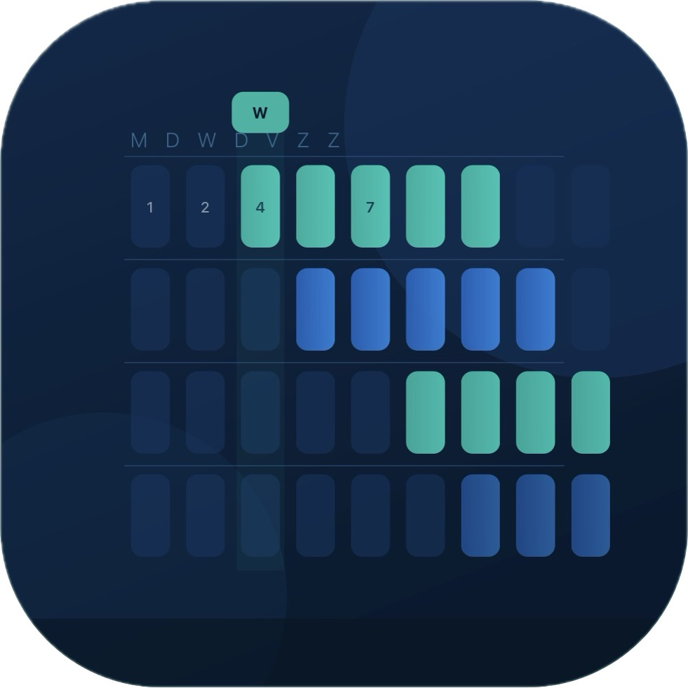

Planning
⟳ Sync
📂 Wekelijkse Excel-sync
Hoe:
Sla je .xlsm op vanuit OneDrive → sleep het hieronder.
Je
vinkjes blijven bewaard
per DNW-nummer na elke sync.
Nieuwe dossiers worden toegevoegd, links uit vorige sync blijven behouden.
📁 Sleep .xlsm hier of klik om te bladeren
🟢 Lopend
🟡 Volg. wk
⬜ Niets aangevinkt
✕ Sluiten
🔨
Lopend
✅
Afgewerkt